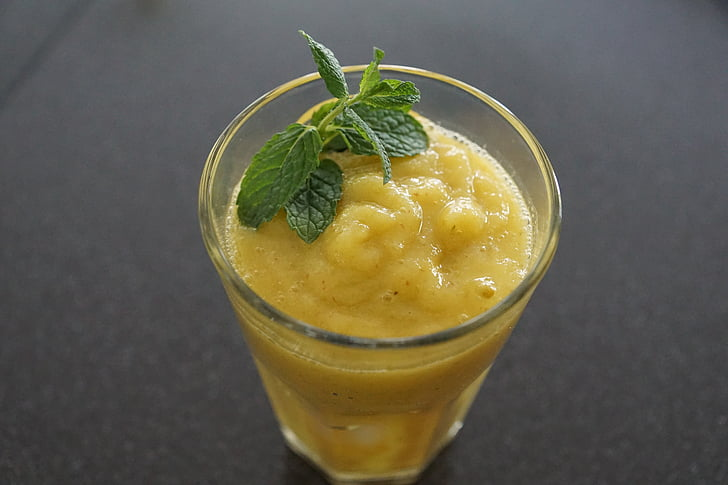

Golden Spice Smoothie on täyteläinen ja ravitseva smoothie, joka on täynnä trooppisia makuja ja mausteisia aromeja. Tämä smoothie on valmistettu tuoreista appelsiineista, makeasta mangosta, terveellisistä chiansiemenistä ja inkivääristä, joka antaa sille mausteisen potkun.Golden Spice Smoothie on erinomainen vaihtoehto, jos haluat piristää päivääsi luonnollisella tavalla. Inkiväärin uskotaan nimittäin auttavan vähentämään tulehdusta ja parantamaan immuniteettiasi, joten tämä smoothie on täydellinen tapa antaa kehollesi lisäpotkua ja energiaa. Tästä reseptistä saat kaksi annosta.
| 2 rkl | chiansiemeniä |
| 2 dl | vettä |
| 2 kpl | appelsiinia |
| puolikas | mango |
| 0,5 rkl | raastettua inkivääriä |
| 4 dl | maustamatonta jogurttia |
Valmista! Voit halutessasi maustaa smoothien vielä vaniljasokerilla.